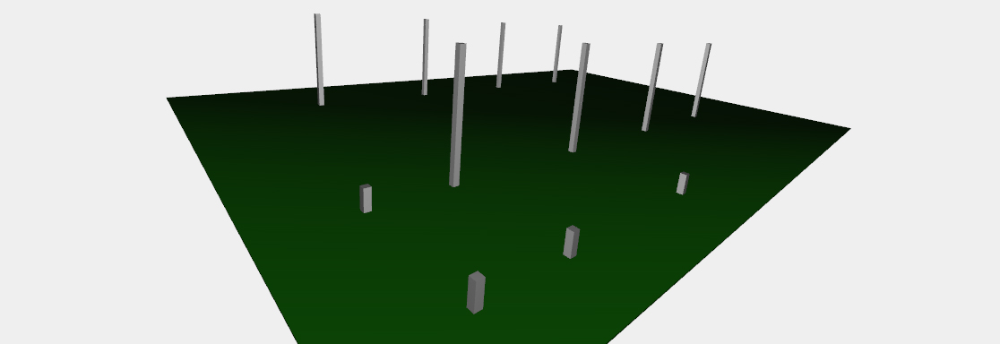
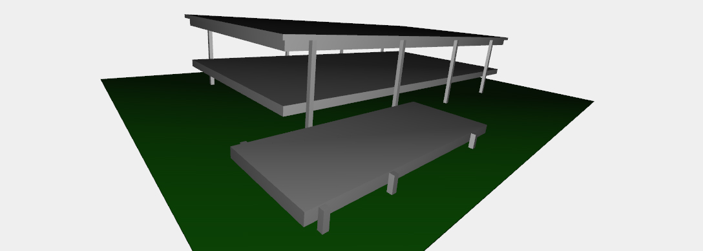
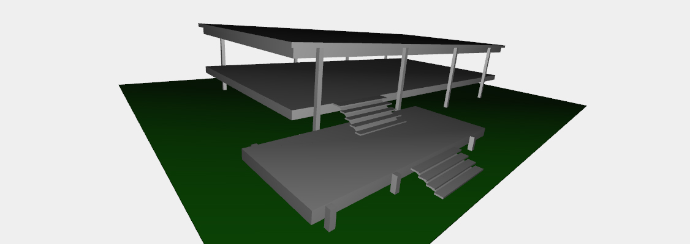
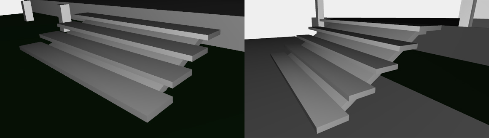
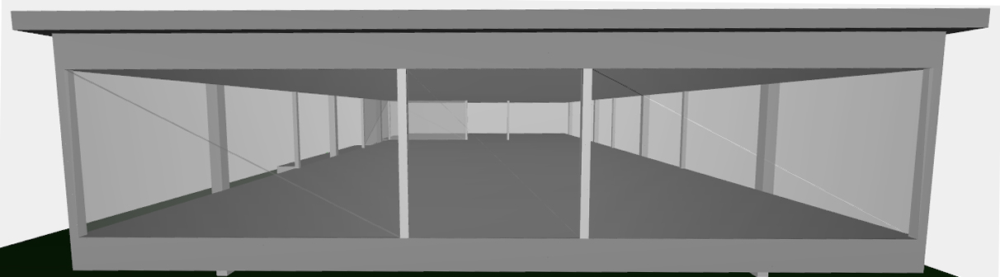
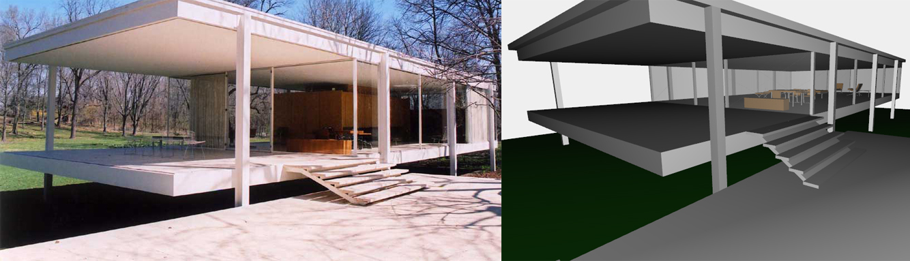
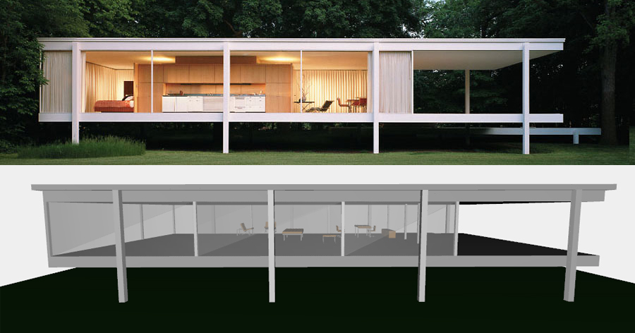
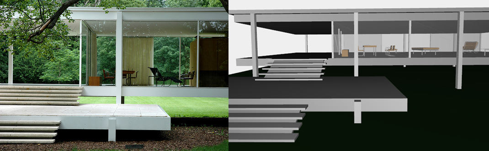

Farnsworth House Development
Pillars
After the creation of the terrain, the function farnsworth_house() build the pillars. Every pillar is a CUBOID 0.5*0.5 on x*z; there are two kind of pillars, just the height is different: 1.6 or 10. There are three rows of pillars. The first one is composed just by three little pillars. The middle one contains one smaller pillar and four taller pillars. The last one has just four smaller pillars. The first and the second rows are far from each other for 10 on z axis(the width of the first floor); the second and the third one for 25 (the width of the second floor).
Floors
The house is essentially one single open room with an extensive us of floor-to-ceiling glass. In the 3D model are built three CUBOIDs respectivly: one for the the linking floor between the house and the terrain, one for the house floor (used also as roof) and one for a higher and larger roof.
Stairs
Every step is a CUBOID([0.8, 0.15, 7.5]). In the lower stair there are 4 steps translated of ([0.8, 0.35]) on ([0, 1]) axes from the lower step. In the higher stair there are 5 step translated of ([0.8, 0.5]) on ([0, 1]) axis from the lower step. The last step is bigger then is a double step. Under the two stair ther is a structure to support them: they are CUBOIDs properly translated and rotated.
 Windows
Allw the windows are CUBOIDs with 0.1 depth and 10 height (the height between the second floor and the roof); coloured by [200/255, 200/255, 200/255, 0.5] - the trasparency give us the idea of a window. The windows are different just for the width, and everyone is far from the nexts for 0.25, that is the width of fixtures, created with CUBOID([0.25, 4.9, 0.25]) and properly translated.
Complete House
At the end of the execution of farnsworth_house() the Plasm.js 3D model presents itself to us like a real mini Farnsworth nouse where can be placed the interior elements.
  